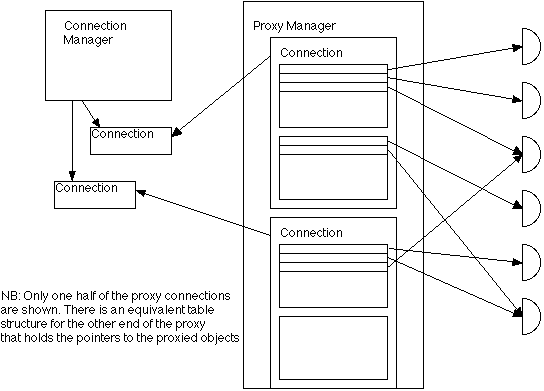

Proxy Management in Neocosm
Last updated: [98/07/19 Bob] Author: Bob Schumaker.
Introduction
The Proxy Manager is the layer between raw communications and remote object references. High-level distributed object will never access data communication primitives directly. Instead, the higher layers will access remote objects through a proxy mechanism.
Requirements
- Encapsulate secure and authenticated remote object references in a 'simple'
interface (currently Ref)
-
Hide the details of the low-level communications mechanisms from the distributed object layer
-
Provide consistent failure semantics for all proxies that travel over a single physical connection (i.e. if the underlying transport fails in a way that will affect all traffic over that connection, make sure that all clients of that connection also fail)
Architecture
Current Architecture Overview
In the current system, proxy objects are closely tied to the underlying connection in that the fragile references to objects go through a per-connection table (import/export).
Proposed Architecture Overview
How proxies get created, an overview (straw man until some of the actual details can be hammered out, success is assumed everywhere):
- FollowRef is invoked on a SturdyRef object (<registrar
ID>, <object id>) [<object ID> is a swiss number]
- A proxy
constructor is invoked (Proxy(<registrar ID>, <object ID>)
-
- The
proxy code asks the low-level comm system for a connection object
- A connection is opened and returned (or a reference to an already
open connection)
- The proxy code asks the connection for a
reference to <object id>, specifying its local reference (this is
optional really, since all messages could be addressed purely by swiss
number -- but we're assuming a table structure along the lines of the
current import/export table)
- The comm system makes the
request of the remote machine
- The remote machine's comm
system checks to see if <object id> is exported to the requesting
machine
- The remote machine fills in its derived table and
returns success to the requestor
- The local machine's comm
system returns the appropriate data-comm level reference for the
remote object (a table index, perhaps?)
- The proxy constructor
finishes, and the proxy is now ready to accept 'E.Send' requests

The life cycle of a proxy, and how they are created and destroyed can be found in the Proxy Life Cycle document.
Which directories on our tree does this subsystem cover?
This subsystem is contained in the package org.erights.e.net.proxy.
Is it JavaDoc'ed?
The JavaDoc for the proxy subsystem can be found in the
package summary.
Examples
Are there examples?
Testing and Debugging
(Optional) Lists any tests and debugging utilities which are to be developed
to help test the design (e.g. test classes, trace categories, etc.)
Design Issues
Resolved Issues
History of issues raised and resolved during initial design, or during
design inspections. Can also include alternative designs, with the reasons
why they were rejected
Open Issues